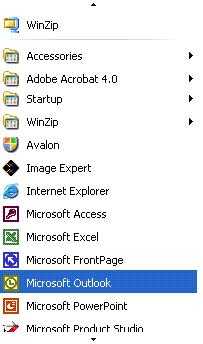

title: Scroll Control Pattern
description: Describes guidelines and conventions for implementing IScrollProvider, including information about properties and methods. The Scroll control pattern is used to support a control that acts as a scrollable container for a collection of child objects.
ms.assetid: baf8012a-52d5-4465-b26d-aa3d7f550b54
keywords:
- UI Automation,implementing Scroll control pattern
- UI Automation,Scroll control pattern
- UI Automation,IScrollProvider
- IScrollProvider
- implementing UI Automation Scroll control patterns
- Scroll control patterns
- control patterns,IScrollProvider
- control patterns,implementing UI Automation Scroll
- control patterns,Scroll
- interfaces,IScrollProvider
ms.topic: article
ms.date: 05/31/2018
Scroll Control Pattern
Describes guidelines and conventions for implementing IScrollProvider, including information about properties and methods. The Scroll control pattern is used to support a control that acts as a scrollable container for a collection of child objects.
The control is not required to use scroll bars to support the scrolling functionality, although it commonly does. The following image shows a scrolling control that does not use scroll bars. For examples of controls that implement this control pattern, see Control Types and Their Supported Control Patterns.

This topic contains the following sections.
Implementation Guidelines and Conventions
When implementing the Scroll control pattern, note the following guidelines and conventions:
- The children of this control must implement IScrollItemProvider.
- The scroll bars of a container control do not support the Scroll control pattern. They must support the RangeValue control pattern instead.
- When scrolling is measured in percentages, all values or amounts related to scroll graduation must be normalized to a range of 0 to 100.
- The IScrollProvider::HorizontallyScrollable property and VerticallyScrollable property are independent of the IsEnabled property.
- If the IScrollProvider::HorizontallyScrollable property is FALSE, the HorizontalViewSize property should be set to 100 (100%) and HorizontalScrollPercent property should be set to UIA_ScrollPatternNoScroll (-1). Likewise, if the VerticallyScrollable property is FALSE, the VerticalViewSize property should be set to 100 (100%) and VerticalScrollPercent property should be set to UIA_ScrollPatternNoScroll (-1). This allows a Microsoft UI Automation client to use these property values within the SetScrollPercent method while avoiding a race condition if a direction the client is not interested in scrolling becomes activated.
- The IScrollProvider::HorizontalScrollPercent property is locale-specific. Setting HorizontalScrollPercent to 100 must set the scrolling location of the control to the equivalent of its rightmost position for languages such as English that read left to right. Alternately, for languages such as Arabic that read right to left, setting HorizontalScrollPercent to 100 must set the scroll location to the leftmost position.
Required Members for IScrollProvider
The following properties and methods are required for implementing the IScrollProvider interface.
Â
This control pattern has no associated events.
Related topics
Control Types and Their Supported Control Patterns
UI Automation Control Patterns Overview
UI Automation Tree Overview
Â
Â